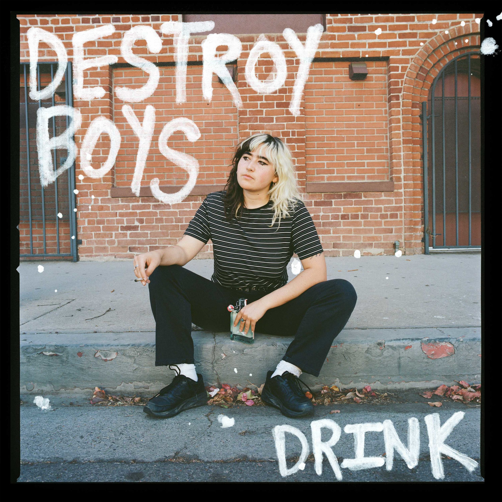

[Verse 1]
Heaven send someone down
I'm about to turn this confession to a smoke cloud
Who put me here? It’s hard to say
Nails bleed as I claw out of the grave
[Pre-Chorus]
I want to play guitar
But I reach for a glass
She says that I'm a star
That I won't last
[Chorus]
She understands me like you did
She really loves me
I'm a saint living in sin
Oh, she really loathes me
She really loves me
She really loves
[Verse 2]
Sometimes I see the sun rise
I try everything to calm my nervous mind
I don’t wanna let go control
Don't like feeling alonе
[Pre-Chorus]
At least I know what I've seen
Thesе horns run through my family
At least I know
At least I know
[Chorus]
She understands me like you did
She really loves me
I'm a saint living in sin
Oh, she really loathes me
She really loves me
She really loves
[Bridge]
Woo ooh, here we are again
She holds me tight
But something isn't right
Woo ooh, but something isn't right
[Chorus]
She understands me like you did
She really loves me
I'm a saint living in sin
Oh, she really loathes me
[Chorus]
She understands me like you did
She really loves me
I'm a saint living in sin
Oh, she really loathes me
She really loves me
She really loves